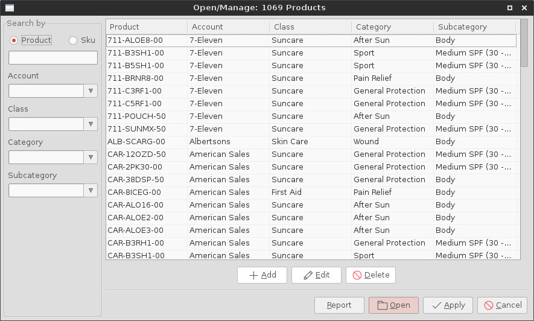

Openeing Products¶
A great deal of the functionality for reporting and viewing forecasts (and other information) can be found in the Open/Manage Products frame. This can be found in the menu under File > Open/Manage Products. When first opened, the frame will display all products currently housed in the database.
Searching for Products¶
To search for a product, start by typing its name into the Product field.
If a sku is known instead, then select the Sku button and enter the value.
All searching will occur in realtime, as you type.
The ability to use a placeholder to account for arbitrary values is available.
Simply, use the % character.
For example, entering %B3RH1 will result in all B3RH1 products without regard to their prefix.
In many cases it will be adventagious to search for products by their type instead of using explicit names. For this purpose, the Account, Class, Category, and Subcategory menus will allow the user to filter the products. The values defining the hierarch can be defined by the user. This will be presented in the managing-data section.